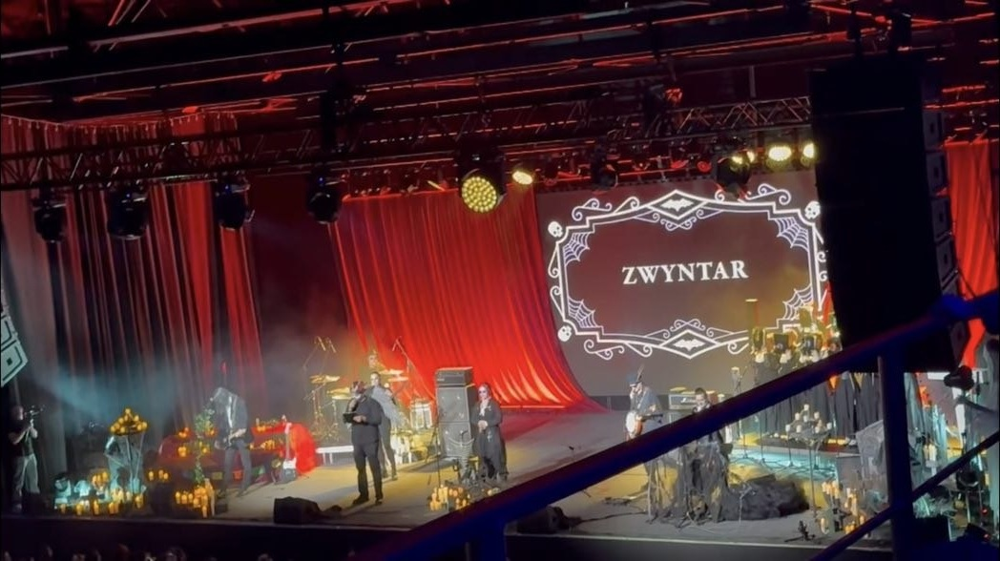
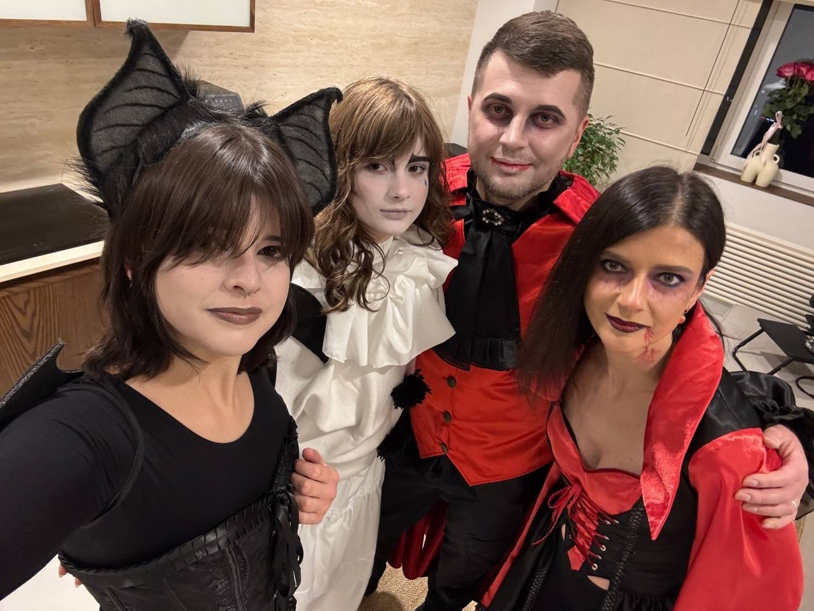
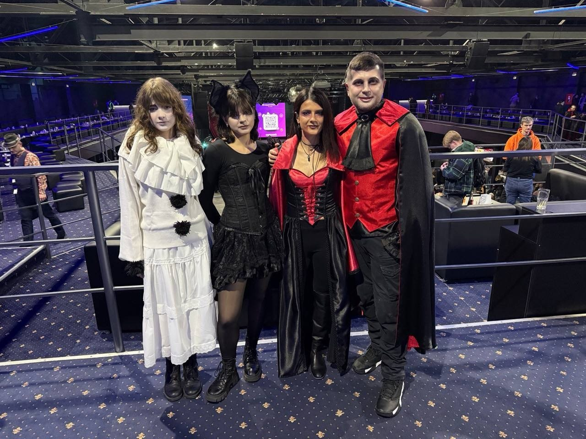

31 жовтня 2025 року у Києві відбувся великий сольний концерт гурту ZWYNTAR у Stereo Plaza. Подія була приурочена до Геловіну та стала одним із наймасштабніших виступів гурту.

Концерт поєднав живу музику з театралізованим шоу: глядачів чекала атмосфера «театру жахів», оновлене звучання відомих композицій, спеціальні гості та тематичні декорації.
Особливу увагу приділили візуальній частині — сцена перетворилася на містичний простір, а сам гурт закликав гостей приходити у тематичних костюмах. Багато відвідувачів підтримали цю ідею, створивши справжню святкову атмосферу Halloween та Día de los Muertos.
Цей концерт став єдиним осіннім виступом ZWYNTAR у 2025 році та запам’ятався як атмосферне поєднання музики, містики та живого перформансу.
Наша родина не могла пропустити таку чудову подію, тож ми зробили макіяж, одяглись в костюми і вирушили по пригоди

